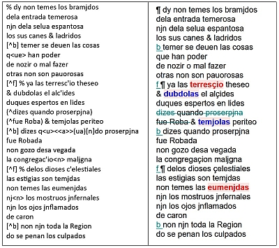
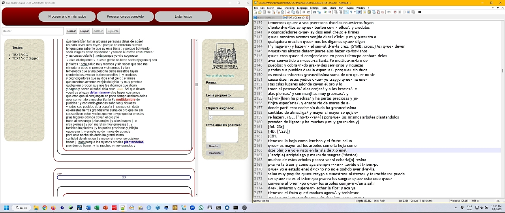

El Analizador Corpus OSTA puede ser utilizado también durante el proceso de corrección de las transcripciones paleográficas. Una vez procesada la transcripción que se se desea corregir, la pantalla muestra TEXT.SIGLA.tagged.html con las abreviaturas resueltas, los añadidos y supresiones marcados; el etiquetado morfológico (visible al pasar el cursor por encima de una palabra); y una serie de palabras marcadas en azul o en rojo.

Las palabras en azul corresponden a aquellas analizadas como verbo+clítico, aunque en algunas ocasiones el análisis no es correcto, por lo que es siempre conveniente revisar estas formas. Las palabras en rojo corresponden a aquellas que no han podido ser analizadas por no encontrarse en el diccionario, pudiéndose tratar de palabras transcritas correctamente, pero aún no lematizadas y analizadas, o de errores de transcripción.
El Analizador Corpus OSTA no permite corregir el texto directamente desde la interfaz, siendo necesario trabajar con el fichero que contiene la transcripción TEXT.SIGLA.txt, en un editor de texto plano como Notepad++, para Windows, o BBEdit, para Mac.

Para trabajar con una transcripción previamente procesada, es necesario hacer clic en listar textos en la barra de selección de procesos y luego seleccionar el fichero TEXT.SIGLA.tagged correspondiente en la barra de textos.